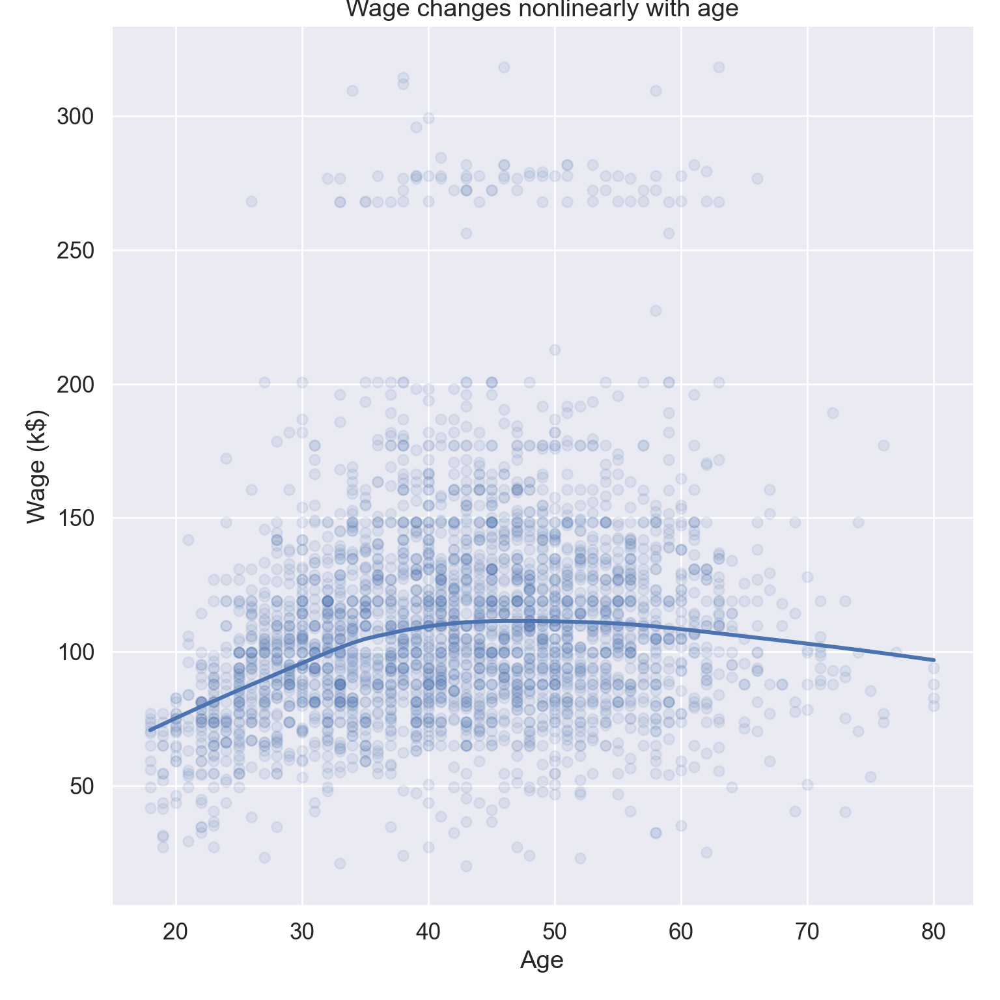
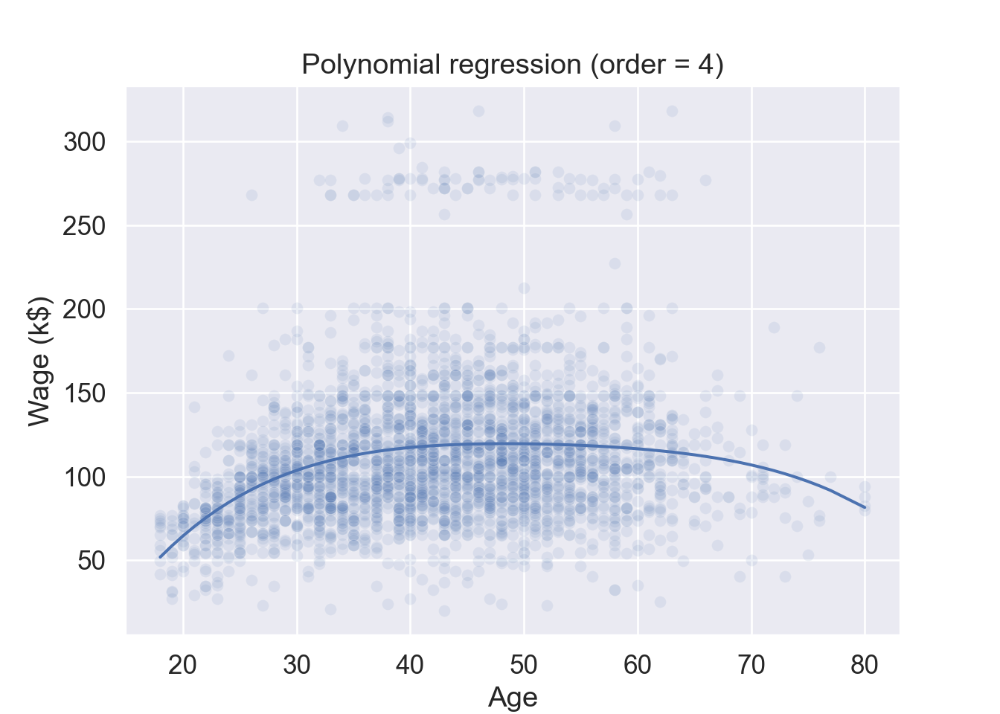
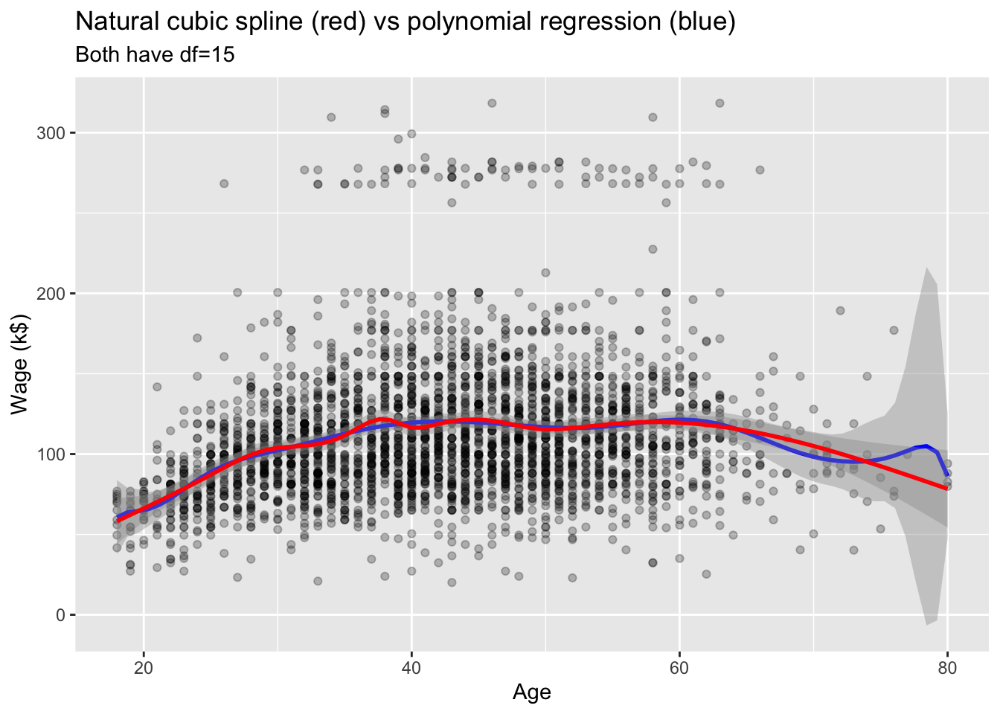
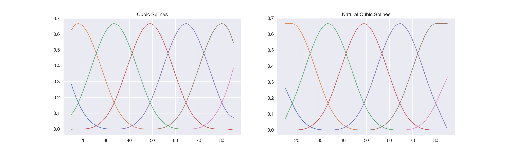
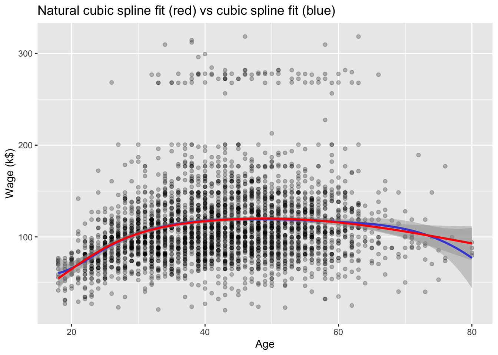

# Load the pandas libraryimport pandas as pd# Load numpy for array manipulationimport numpy as np# Load seaborn plotting libraryimport seaborn as snsimport matplotlib.pyplot as plt# Set font size in plotssns.set(font_scale =1.2)# Display all columnspd.set_option('display.max_columns', None)# Import Wage dataWage = pd.read_csv("../data/Wage.csv")Wage.info()
# Visualize wage ~ age, display lowess curveplt.figure()sns.lmplot( data = Wage, x ="age", y ="wage", lowess =True, scatter_kws = {'alpha' : 0.1}, height =8 ).set( title ="Wage changes nonlinearly with age", xlabel ='Age', ylabel ='Wage (k$)' );plt.show()

library(gtsummary)library(ISLR2)library(tidyverse)# Convert to tibbleWage <-as_tibble(Wage) %>%print(width =Inf)
# A tibble: 3,000 × 11
year age maritl race education region
<int> <int> <fct> <fct> <fct> <fct>
1 2006 18 1. Never Married 1. White 1. < HS Grad 2. Middle Atlantic
2 2004 24 1. Never Married 1. White 4. College Grad 2. Middle Atlantic
3 2003 45 2. Married 1. White 3. Some College 2. Middle Atlantic
4 2003 43 2. Married 3. Asian 4. College Grad 2. Middle Atlantic
5 2005 50 4. Divorced 1. White 2. HS Grad 2. Middle Atlantic
6 2008 54 2. Married 1. White 4. College Grad 2. Middle Atlantic
7 2009 44 2. Married 4. Other 3. Some College 2. Middle Atlantic
8 2008 30 1. Never Married 3. Asian 3. Some College 2. Middle Atlantic
9 2006 41 1. Never Married 2. Black 3. Some College 2. Middle Atlantic
10 2004 52 2. Married 1. White 2. HS Grad 2. Middle Atlantic
jobclass health health_ins logwage wage
<fct> <fct> <fct> <dbl> <dbl>
1 1. Industrial 1. <=Good 2. No 4.32 75.0
2 2. Information 2. >=Very Good 2. No 4.26 70.5
3 1. Industrial 1. <=Good 1. Yes 4.88 131.
4 2. Information 2. >=Very Good 1. Yes 5.04 155.
5 2. Information 1. <=Good 1. Yes 4.32 75.0
6 2. Information 2. >=Very Good 1. Yes 4.85 127.
7 1. Industrial 2. >=Very Good 1. Yes 5.13 170.
8 2. Information 1. <=Good 1. Yes 4.72 112.
9 2. Information 2. >=Very Good 1. Yes 4.78 119.
10 2. Information 2. >=Very Good 1. Yes 4.86 129.
# … with 2,990 more rows
# Summary statisticsWage %>%tbl_summary()
Characteristic
N = 3,0001
year
2003
513 (17%)
2004
485 (16%)
2005
447 (15%)
2006
392 (13%)
2007
386 (13%)
2008
388 (13%)
2009
389 (13%)
age
42 (34, 51)
maritl
1. Never Married
648 (22%)
2. Married
2,074 (69%)
3. Widowed
19 (0.6%)
4. Divorced
204 (6.8%)
5. Separated
55 (1.8%)
race
1. White
2,480 (83%)
2. Black
293 (9.8%)
3. Asian
190 (6.3%)
4. Other
37 (1.2%)
education
1. < HS Grad
268 (8.9%)
2. HS Grad
971 (32%)
3. Some College
650 (22%)
4. College Grad
685 (23%)
5. Advanced Degree
426 (14%)
region
1. New England
0 (0%)
2. Middle Atlantic
3,000 (100%)
3. East North Central
0 (0%)
4. West North Central
0 (0%)
5. South Atlantic
0 (0%)
6. East South Central
0 (0%)
7. West South Central
0 (0%)
8. Mountain
0 (0%)
9. Pacific
0 (0%)
jobclass
1. Industrial
1,544 (51%)
2. Information
1,456 (49%)
health
1. <=Good
858 (29%)
2. >=Very Good
2,142 (71%)
health_ins
1. Yes
2,083 (69%)
2. No
917 (31%)
logwage
4.65 (4.45, 4.86)
wage
105 (85, 129)
1 n (%); Median (IQR)
# Plot wage ~ age, GAM fit is display when n >1000Wage %>%ggplot(mapping =aes(x = age, y = wage)) +geom_point() +geom_smooth() +labs(title ="Wage changes nonlinearly with age",x ="Age",y ="Wage (k$)")
Create new variables \(X_1 = X\), \(X_2 = X^2\), …, and then treat as multiple linear regression.
Not really interested in the coefficients; more interested in the fitted function values at any value \(x_0\): \[
\hat f(x_0) = \hat{\beta}_0 + \hat{\beta}_1 x_0 + \hat{\beta}_2 x_0^2 + \hat{\beta}_3 x_0^3 + \hat{\beta}_4 x_0^4.
\]
In a Jupyter environment, please rerun this cell to show the HTML representation or trust the notebook. On GitHub, the HTML representation is unable to render, please try loading this page with nbviewer.org.
# Plotplt.figure()ax = sns.scatterplot( data = Wage, x ='age', y ='wage', alpha =0.1);sns.lineplot( x = Wage['age'], y = pipe.predict(X), ax = ax).set( title ="Polynomial regression (order = 4)", xlabel ='Age', ylabel ='Wage (k$)');plt.show()

import statsmodels.api as smimport statsmodels.formula.api as smf# Fit linear regressionlmod = smf.ols(formula ='wage ~ np.vander(age, 5, increasing = True) - 1', data = Wage).fit()lmod.summary()
OLS Regression Results
Dep. Variable:
wage
R-squared:
0.086
Model:
OLS
Adj. R-squared:
0.085
Method:
Least Squares
F-statistic:
70.69
Date:
Tue, 31 Jan 2023
Prob (F-statistic):
2.77e-57
Time:
09:39:56
Log-Likelihood:
-15315.
No. Observations:
3000
AIC:
3.064e+04
Df Residuals:
2995
BIC:
3.067e+04
Df Model:
4
Covariance Type:
nonrobust
coef
std err
t
P>|t|
[0.025
0.975]
np.vander(age, 5, increasing=True)[0]
-184.1542
60.040
-3.067
0.002
-301.879
-66.430
np.vander(age, 5, increasing=True)[1]
21.2455
5.887
3.609
0.000
9.703
32.788
np.vander(age, 5, increasing=True)[2]
-0.5639
0.206
-2.736
0.006
-0.968
-0.160
np.vander(age, 5, increasing=True)[3]
0.0068
0.003
2.221
0.026
0.001
0.013
np.vander(age, 5, increasing=True)[4]
-3.204e-05
1.64e-05
-1.952
0.051
-6.42e-05
1.45e-07
Omnibus:
1097.594
Durbin-Watson:
1.960
Prob(Omnibus):
0.000
Jarque-Bera (JB):
4965.521
Skew:
1.722
Prob(JB):
0.00
Kurtosis:
8.279
Cond. No.
5.67e+08
Notes: [1] Standard Errors assume that the covariance matrix of the errors is correctly specified. [2] The condition number is large, 5.67e+08. This might indicate that there are strong multicollinearity or other numerical problems.
# poly(age, 4) constructs orthogonal polynomial of degree 1 to degree, all orthogonal to the constantlmod <-lm(wage ~poly(age, degree =4), data = Wage)summary(lmod)
# poly(age, 4, raw = TRUE) procudes raw othogonal polynomial, which match Pythonlmod <-lm(wage ~poly(age, degree =4, raw =TRUE), data = Wage)summary(lmod)
Call:
lm(formula = wage ~ poly(age, degree = 4, raw = TRUE), data = Wage)
Residuals:
Min 1Q Median 3Q Max
-98.707 -24.626 -4.993 15.217 203.693
Coefficients:
Estimate Std. Error t value Pr(>|t|)
(Intercept) -1.842e+02 6.004e+01 -3.067 0.002180 **
poly(age, degree = 4, raw = TRUE)1 2.125e+01 5.887e+00 3.609 0.000312 ***
poly(age, degree = 4, raw = TRUE)2 -5.639e-01 2.061e-01 -2.736 0.006261 **
poly(age, degree = 4, raw = TRUE)3 6.811e-03 3.066e-03 2.221 0.026398 *
poly(age, degree = 4, raw = TRUE)4 -3.204e-05 1.641e-05 -1.952 0.051039 .
---
Signif. codes: 0 '***' 0.001 '**' 0.01 '*' 0.05 '.' 0.1 ' ' 1
Residual standard error: 39.91 on 2995 degrees of freedom
Multiple R-squared: 0.08626, Adjusted R-squared: 0.08504
F-statistic: 70.69 on 4 and 2995 DF, p-value: < 2.2e-16
Since \(\hat f(x_0)\) is a linear function of the \(\hat{\beta}_j\), we can get a simple expression for pointwise-variances\(\operatorname{Var}[\hat f(x_0)]\) at any value \(x_0\).
We either fix the degree \(d\) at some reasonably low value, or use cross-validation to choose \(d\).
Can do separately on several variables. Just stack the variables into one matrix, and separate out the pieces afterwards (see GAMs later).
Polynomial modeling can be done for generalized linear models (logistic regression, Poisson regression, etc) as well.
Caveat: polynomials have notorious tail behavior. Very bad for extrapolation.
library(splines)# Plot wage ~ ageWage %>%ggplot(mapping =aes(x = age, y = wage)) +geom_point(alpha =0.25) +# Polynomial regression with degree 14geom_smooth(method ="lm",formula = y ~poly(x, degree =14),color ="blue" ) +# Natural cubic splinegeom_smooth(method ="lm",formula = y ~ns(x, df =14),color ="red" ) +labs(title ="Natural cubic spline (red) vs polynomial regression (blue)",subtitle ="Both have df=15",x ="Age",y ="Wage (k$)" )

3 Piecewise polynomials (regression splines)
Instead of a single polynomial in \(X\) over its whole domain, we can rather use different polynomials in regions defined by knots. E.g., a piecewise cubic polynomial with a single knot at \(c\) takes the form \[
y_i = \begin{cases}
\beta_{01} + \beta_{11} x_i + \beta_{21} x_i^2 + \beta_{31} x_i^3 + \epsilon_i & \text{if } x_i < c \\
\beta_{02} + \beta_{12} x_i + \beta_{22} x_i^2 + \beta_{32} x_i^3 + \epsilon_i & \text{if } x_i \ge c
\end{cases}.
\]
Better to add constraints to the polynomials, e.g., continuity.
Splines have the “maximum” amount of continuity.
3.1 Linear spline
A linear spline with knots at \(\xi_k\), \(k = 1,\ldots,K\), is a piecewise linear polynomial continuous at each knot.
We can represent this model as \[
y_i = \beta_0 + \beta_1 b_1(x_i) + \beta_2 b_2(x_i) + \cdots + \beta_{K+1} b_{K+1}(x_i) + \epsilon_i,
\] where \(b_k\) are basis functions: \[\begin{eqnarray*}
b_1(x_i) &=& x_i \\
b_{k+1}(x_i) &=& (x_i - \xi_k)_+, \quad k=1,\ldots,K.
\end{eqnarray*}\] Here \((\cdot)_k\) means positive part \[
(x_i - \xi_i)_+ = \begin{cases}
x_i - \xi_k & \text{if } x_i > \xi_k \\
0 & \text{otherwise}
\end{cases}.
\]
3.2 Cubic splines
A cubic spline with knots at \(\xi_k\), \(k = 1,\ldots,K\), is a piecewise cubic polynomial with continuous derivatives up to order 2 at each knot.
Again we can represent this model with truncated power basis functions\[
y_i = \beta_0 + \beta_1 b_1(x_i) + \beta_2 b_2(x_i) + \cdots + \beta_{K+3} b_{K+3}(x_i) + \epsilon_i,
\] with \[\begin{eqnarray*}
b_1(x_i) &=& x_i \\
b_2(x_i) &=& x_i^2 \\
b_3(x_i) &=& x_i^3 \\
b_{k+3}(x_i) &=& (x_i - \xi_k)_+^3, \quad k = 1,\ldots,K,
\end{eqnarray*}\] where \[
(x_i - \xi_i)_+^3 = \begin{cases}
(x_i - \xi_k)^3 & \text{if } x_i > \xi_k \\
0 & \text{otherwise}
\end{cases}.
\]
A cubic spline with \(K\) knots costs \(K+4\) parameters or degrees of freedom. That is \(4(K+1)\) polynomial coefficients minus \(3K\) constraints.
While the truncated power basis is conceptually simple, it is not too attractive numerically: powers of large numbers can lead to severe rounding problems. In practice, B-spline basis functions are preferred for their computational efficiency. See ESL Chapter 5 Appendix.
Code
from sklearn.preprocessing import SplineTransformer# Cubic spline for ageX_age = np.array(X['age']).reshape(3000, 1)x_plot = np.linspace(start =15, stop =85, num =70)X_plot = x_plot[:, np.newaxis]bs_plot = SplineTransformer( degree =3,# knots = np.array([25, 40, 60]).reshape(3, 1), n_knots =5, extrapolation ='continue',# include_bias = False ).fit(X_age).transform(X_plot)ns_plot = SplineTransformer( degree =3,# knots = np.array([25, 40, 60]).reshape(3, 1), n_knots =5, extrapolation ='linear',# include_bias = False ).fit(X_age).transform(X_plot) # Plotfig, axes = plt.subplots(ncols =2, figsize = (20, 6))axes[0].plot(x_plot, bs_plot)# axes[0].legend(axes[0].lines, [f"spline {n}" for n in range(4)])axes[0].set_title("B-splines")axes[1].plot(x_plot, ns_plot)# axes[1].legend(axes[0].lines, [f"spline {n}" for n in range(8)])axes[1].set_title("B-splines with linearity at boundary")plt.show()

3.3 Natural cubic splines
Splines can have high variance at the outer range of the predictors.
A natural cubic spline extrapolates linearly beyond the boundary knots. This adds \(4 = 2 \times 2\) extra constraints, and allows us to put more internal knots for the same degrees of freedom as a regular cubic spline.
A natural spline with \(K\) knots has \(K\) degrees of freedom.
library(splines)# Plot wage ~ ageWage %>%ggplot(mapping =aes(x = age, y = wage)) +geom_point(alpha =0.25) +# Cubic splinegeom_smooth(method ="lm",formula = y ~bs(x, knots =c(25, 40, 60)),color ="blue" ) +# Natural cubic splinegeom_smooth(method ="lm",formula = y ~ns(x, knots =c(25, 40, 60)),color ="red" ) +labs(title ="Natural cubic spline fit (red) vs cubic spline fit (blue)",x ="Age",y ="Wage (k$)" )

3.4 Knot placement
One strategy is to decide \(K\), the number of knots, and then place them at appropriate quantiles of the observed \(X\).
In practice users often specify the degree of freedom and let software choose the number of knots and locations.
4 Smoothing splines
Consider this criterion for fitting a smooth function \(g(x)\) to some data: \[
\text{minimize} \quad \sum_{i=1}^n (y_i - g(x_i))^2 + \lambda \int g''(t)^2 \, dt.
\]
The first term is RSS, and tries to make \(g(x)\) match the data at each \(x_i\).
The second term is a roughness penalty and controls how wiggly \(g(x)\) is. It is modulated by the tuning parameters \(\lambda \ge 0\).
The smaller \(\lambda\), the more wiggly the function, eventually interpolating \(y_i\) when \(\lambda = 0\).
As \(\lambda \to \infty\), the function \(g(x)\) becomes linear.
The solution is a (shrunken) natural cubic spline, with a knot at every unique value of \(x_i\). The roughness penalty still controls the roughness via \(\lambda\).
Smoothing splines avoid the knot-selection issue, leaving a single \(\lambda\) to be chosen.
The vector of \(n\) fitted values can be written as \(\hat{g}_\lambda = S_\lambda y\), where \(S_{\lambda}\) is an \(n \times n\) matrix (determined by the \(x_i\) and \(\lambda\)).
The effective degrees of freedom are given by \[
\text{df}_{\lambda} = \sum_{i=1}^n S_{\lambda,ii}.
\] Thus we can specify df rather than \(\lambda\).
The leave-one-out (LOO) cross-validated error is given by \[
\text{RSS}_{\text{CV}}(\lambda) = \sum_{i=1}^n \left[ \frac{y_i - \hat{g}_\lambda(x_i)}{1 - S_{\lambda,ii}} \right]^2.
\]
Warning in smooth.spline(data$x, data$y, w = weight, spar = spar, cv = cv, :
cross-validation with non-unique 'x' values seems doubtful
5 Local regression
With a sliding weight function, we fit separate linear fits over the range of \(X\) by weighted least squares.
At \(X=x_0\), \[
\text{minimize} \quad \sum_{i=1}^n K(x_i, x_0) (y_i - \beta_0 - \beta_1 x_i)^2,
\] where \(K\) is a weighting function that assigns heavier weight for \(x_i\) close to \(x_0\) and zero weight for points furthest from \(x_0\).
Locally weighted linear regression: loess function in R and lowess in Python.
Anecdotally, loess gives better appearance, but is \(O(N^2)\) in memory, so does not work for larger data sets.
6 Generalized additive model (GAM)
Generalized additive models (GAMs) allows for flexible nonlinearities in several variables, but retains the additive structure of linear models. \[
y_i = \beta_0 + f_1(x_{i1}) + f_2(x_{i2}) + \cdots + f_p (x_{ip}) + \epsilon_i.
\]
We can fit GAM simply using, e.g. natural splines.
Coefficients not that interesting; fitted functions are.
Can mix terms: some linear, some nonlinear, and use ANOVA to compare models.
Can use smoothing splines or local regression as well. In R: gam(wage ~ s(year; df = 5) + lo(age; span = :5) + education).
GAMs are additive, although low-order interactions can be included in a natural way using, e.g. bivariate smoothers or interactions of the form (in R) ns(age, df = 5):ns(year, df = 5).
In a Jupyter environment, please rerun this cell to show the HTML representation or trust the notebook. On GitHub, the HTML representation is unable to render, please try loading this page with nbviewer.org.